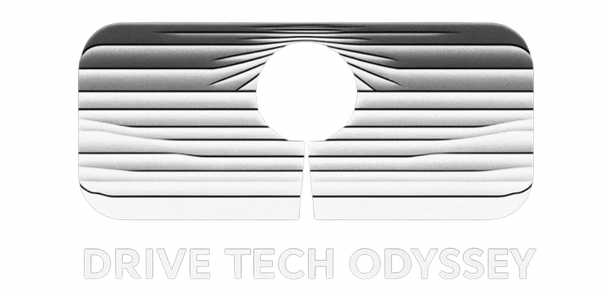

맥북 M5 — LLM 메모리/컨텍스트 시뮬레이터

모델·RAM 선택 → 컨텍스트 슬라이더로 메모리 사용량 실시간 확인
🤖 모델
🔢 양자화 비트:
16bit (BF16/FP16)
16bit (BF16/FP16)
8bit (MXFP8/Q8_0)
4bit (NVFP4/Q4_K_M)
💾 맥북 RAM
OS 기본 사용량
—
macOS + 백그라운드 프로세스
🏆 Opus 4.7 대비 종합 성능
—
—
컨텍스트 추천 (80% 기준)
—
—
KV 캐시 메모리
—
토큰당 계산값
모델 파라미터
—
양자화 계산값
런타임 오버헤드
—
양자화+KV+활성화+고정
총 사용 메모리
—
RAM 대비 사용률
macOS 기본 (6~8GB)
모델 파라미터
KV 캐시 (컨텍스트)
런타임 오버헤드 (양자화+KV+활성화+고정)
50%
70%
80% ← 권장 최대
100%
KV 캐시 공식
레이어×2×KV헤드×차원×비트÷8×토큰
토큰당开销
—
1토큰 추가 시 메모리 증가량
80% 임계
—
RAM×0.8 − OS − 파라미터 ÷ 토큰당 ÷ KV_PER_TOKEN
⚡ Sliding Window Attention
최대 컨텍스트 대비 KV 캐시: 마지막
1,024 토큰
만 메모리 유지
슬라이더를 256,000 토큰으로 설정해도 KV 캐시는 1,024 토큰 기준 → 256배 절감 = Gemma 4가 64GB 맥북에서 가능한 이유
📝 컨텍스트 토큰수 (클릭·드래그)
32,768 토큰
모델별 메모리 비교 (KV 캐시 포함)
상세 스펙표